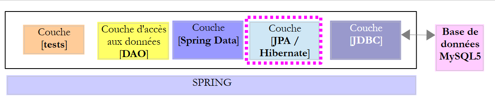
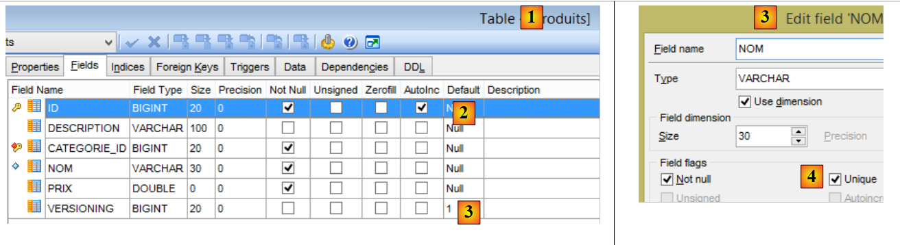
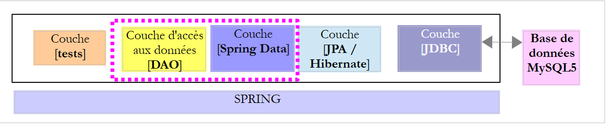
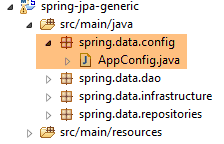
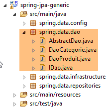
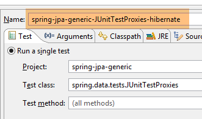

6. Spring Data JPA Hibernate
6.1. Introduction
We will use the [dbproduitscategories] database managed by the [spring-jdbc-04] project and implement the two [IDao<Categorie>, IDao<Produit>] interfaces defined in that project. This will allow us to do several things:
- compare the implementation code;
- use the same test suite;
- compare the performance of the two implementations;
 |
- the [JDBC] layer is implemented by the [mysql-config-jdbc] project discussed in Section 3.3;
We will now move on to the other layers.
6.2. Setting up the working environment
Using STS, import the [mysl-config-jpa-hibernate] and [1] projects located in the [<exemples>/spring-database-config/mysql/eclipse] and [2] folders:
 |
This project configures the [Spring JPA Hibernate] layer of the project. Each JPA implementation has its own configuration project.
Next, import the [spring-jpa-generic] and [1] projects located in the [<exemples>/spring-database-generic/spring-jpa] and [2] folders:
 |
Once this is done, reset the Maven environment (Alt-F5) for all projects in [Package Explorer]:
 |
Then, to verify the build environment, run the build configuration named [spring-jpa-generic-JUnitTestDao-hibernate]:
 |
This configuration runs the [JUnitTestDao] test. This test must pass:
 |
6.3. The JPA layer configuration project
 |
The purpose of this project is to configure the JPA layer of the architecture below:
 |
6.3.1. Maven Configuration
The project is a Maven project configured by the following [pom.xml] file:
<project xsi:schemaLocation="http://maven.apache.org/POM/4.0.0 http://maven.apache.org/xsd/maven-4.0.0.xsd"
xmlns="http://maven.apache.org/POM/4.0.0" xmlns:xsi="http://www.w3.org/2001/XMLSchema-instance">
<modelVersion>4.0.0</modelVersion>
<groupId>dvp.spring.database</groupId>
<artifactId>generic-config-jpa</artifactId>
<version>0.0.1-SNAPSHOT</version>
<name>configuration mysql openjpa</name>
<parent>
<groupId>org.springframework.boot</groupId>
<artifactId>spring-boot-starter-parent</artifactId>
<version>1.2.3.RELEASE</version>
</parent>
<dependencies>
<!-- dépendances variables ********************************************** -->
<!-- JPA provider -->
<dependency>
<groupId>org.hibernate</groupId>
<artifactId>hibernate-entitymanager</artifactId>
</dependency>
<!-- dépendances constantes ********************************************** -->
<!-- Spring Data -->
<dependency>
<groupId>org.springframework.data</groupId>
<artifactId>spring-data-jpa</artifactId>
</dependency>
<!-- Spring Context -->
<!-- configuration JDBC inherited -->
<dependency>
<groupId>dvp.spring.database</groupId>
<artifactId>generic-config-jdbc</artifactId>
<version>0.0.1-SNAPSHOT</version>
<exclusions>
<exclusion>
<groupId>org.springframework.boot</groupId>
<artifactId>spring-boot-starter-jdbc</artifactId>
</exclusion>
</exclusions>
</dependency>
</dependencies>
<properties>
<project.build.sourceEncoding>UTF-8</project.build.sourceEncoding>
<java.version>1.7</java.version>
</properties>
<build>
<plugins>
<plugin>
<groupId>org.apache.maven.plugins</groupId>
<artifactId>maven-surefire-plugin</artifactId>
<version>2.18.1</version>
</plugin>
</plugins>
</build>
</project>
- Lines 5–7: the Maven artifact generated by this project. The configuration projects for the other JPA implementations (Eclipselink and OpenJpa) will use this same artifact. This means that only one of these projects can be active at any given time. Therefore, you should avoid having all of them present in [Package Explorer]. Only one is needed;
- lines 10–14: the parent Maven project that defines version for most of the project’s necessary dependencies;
- lines 19–22: the Hibernate library;
- lines 25–28: the Spring library Data;
- lines 32–34: the JPA layer configuration project relies on the JDBC layer configuration project, which defines, among other things, the JDBC driver for the SGBD being used and the database credentials;
- lines 35–39: the configuration project for layer JDBC includes the library [Spring JDBC], which is replaced here by the library [Spring Data JPA]. Therefore, we recommend not including it in the project dependencies. However, leaving it in will not cause any errors;
Ultimately, the project dependencies are as follows:
 |
6.3.2. Spring Configuration
 |
The [ConfigJpa] class configures the Spring project:
package generic.jpa.config;
import javax.persistence.EntityManagerFactory;
import generic.jdbc.config.ConfigJdbc;
import org.apache.tomcat.jdbc.pool.DataSource;
import org.springframework.context.annotation.Bean;
import org.springframework.context.annotation.Configuration;
import org.springframework.context.annotation.Import;
import org.springframework.orm.jpa.JpaTransactionManager;
import org.springframework.orm.jpa.JpaVendorAdapter;
import org.springframework.orm.jpa.LocalContainerEntityManagerFactoryBean;
import org.springframework.orm.jpa.vendor.Database;
import org.springframework.orm.jpa.vendor.HibernateJpaVendorAdapter;
import org.springframework.transaction.PlatformTransactionManager;
@Configuration
@Import({ ConfigJdbc.class })
public class ConfigJpa {
// the provider JPA
@Bean
public JpaVendorAdapter jpaVendorAdapter() {
HibernateJpaVendorAdapter hibernateJpaVendorAdapter = new HibernateJpaVendorAdapter();
hibernateJpaVendorAdapter.setShowSql(false);
hibernateJpaVendorAdapter.setDatabase(Database.MYSQL);
hibernateJpaVendorAdapter.setGenerateDdl(true);
return hibernateJpaVendorAdapter;
}
// JPA entity packages
public final static String[] ENTITIES_PACKAGES = { "generic.jpa.entities.dbproduitscategories" };
// data source
@Bean
public DataSource dataSource() {
// data source TomcatJdbc
DataSource dataSource = new DataSource();
// configuration access JDBC
dataSource.setDriverClassName(ConfigJdbc.DRIVER_CLASSNAME);
dataSource.setUsername(ConfigJdbc.USER_DBPRODUITSCATEGORIES);
dataSource.setPassword(ConfigJdbc.PASSWD_DBPRODUITSCATEGORIES);
dataSource.setUrl(ConfigJdbc.URL_DBPRODUITSCATEGORIES);
// initially open connections
dataSource.setInitialSize(5);
// result
return dataSource;
}
// EntityManagerFactory
@Bean
public EntityManagerFactory entityManagerFactory(JpaVendorAdapter jpaVendorAdapter, DataSource dataSource) {
LocalContainerEntityManagerFactoryBean factory = new LocalContainerEntityManagerFactoryBean();
factory.setJpaVendorAdapter(jpaVendorAdapter);
factory.setPackagesToScan(ENTITIES_PACKAGES);
factory.setDataSource(dataSource);
factory.afterPropertiesSet();
return factory.getObject();
}
// Transaction manager
@Bean
public PlatformTransactionManager transactionManager(EntityManagerFactory entityManagerFactory) {
JpaTransactionManager txManager = new JpaTransactionManager();
txManager.setEntityManagerFactory(entityManagerFactory);
return txManager;
}
}
- line 18: the class is a Spring configuration class;
- line 19: it imports the beans defined by the configuration class [ConfigJdbc], which was used to configure the Spring project [mysql-config-jdbc]. These are the jSON filters;
- lines 23–30: define the JPA implementation used, in this case the Hibernate implementation (line 25);
- line 26: you can choose whether or not to display the SQL operations executed by the Hibernate implementation;
- line 27: specifies the connected SGBD to Hibernate. This configuration is important. It allows Hibernate to use the SQL dialect of SGBD MySQL, including its proprietary aspects. Furthermore, this informs it about the SQL types and SGBD objects that it will be able to use. It is this ability of the JPA implementation to adapt to a specific SGBD that gives it high portability between SGBD;
- Line 28: Hibernate may or may not generate the target database tables from the JPA entities it finds. This generation only occurs if the tables are absent. If they already exist, no action is taken. We will use this ability to generate tables when we explain how the SQL generation scripts for the various databases used in this document were created;
- line 33: the package containing the JPA entities from the [dbproduitscategories] database;
- lines 36–49: the [tomcat-jdbc] data source linked to the [dbproduitscategories] database;
- lines 52–60: the bean named [entityManagerFactory] (it must be named exactly this) is the bean that will create the [EntityManager] object, which manages the JPA persistence context. All JPA operations go through it. Because we use [Spring Data JPA], we will never use this object ourselves. However, we need to configure it. It needs to know the following:
- the JPA implementation used (line 55);
- the data source used (line 57);
- the JPA entities from this source (line 56);
- line 58: initializes EntityManager with this information;
- Line 59: defines the singleton [entityManagerFactory];
- Lines 63–68: define the transaction manager. It must be named [transactionManager];
- line 65: a transaction manager named JPA is created;
- line 66: it is linked to the data source from line 37 via the bean [entityManagerFactory] (lines 53 and 57);
Only the bean in lines 23–30 depends on the JPA implementation used. The other beans then rely on it.
6.3.3. Entities in the [JPA] layer
 |
 |
The target database is the [dbproduitscategories] database with its two tables, [CATEGORIES] and [PRODUITS]. We have seen that it also has three other tables, [USERS, ROLES, USERS_ROLES], which will be used to secure the web service to be deployed on the web. We will ignore these tables for now. As a reminder, here is the structure of the tables [CATEGORIES] and [PRODUITS]:
The [PRODUITS] table is as follows:
 |
- [ID]: the auto-increment primary key of the [2] table;
- [NOM]: the unique product name of [4];
- [PRIX]: the product price;
- [DESCRIPTION]: the product description;
- [VERSIONING] is the product ID of version. Its initial version is 1 [3]. Each time the product is modified, its version number will be incremented by the code that operates the table;
- [CATEGORIE_ID]: the foreign key in the [CATEGORIES] table to designate the category to which the product belongs;
 |
- in [1-3], the foreign key [CATEGORIE_ID] from the table [PRODUITS]. It targets the column [ID] in table [CATEGORIES] [4-5];
- when a category is deleted, all products linked to it are also deleted [6]. This point is important to note because it is used in the construction of the [DAO] layer utilizing the [dbproduitscategories] database;
The [CATEGORIES] table of categories is as follows:
 |
- [ID]: auto-incrementing primary key;
- [VERSIONING]: version number of the category;
- [NOM]: unique name of the category;
We will now describe the entities JPA, [Produit], and [Categorie], which are images of the tables [PRODUITS] and [CATEGORIES].
|
6.3.3.1. The [AbstractCoreEntity] interface
The [AbstractCoreEntity] interface is implemented by the entities JPA, [Categorie], and [Produit]:
package generic.jpa.entities.dbproduitscategories;
public interface AbstractCoreEntity {
// getters and setters for [id], [version], [entityType] fields
public Long getId();
public void setId(Long id);
public Long getVersion();
public void setVersion(Long version);
public enum EntityType {
PROXY, POJO
}
public EntityType getEntityType();
public void setEntityType(EntityType entityType);
}
This interface, implemented by the two entities JPA, simply serves to list the methods for reading/writing the fields [id], [version], and [entityType] of these entities. The role of the [entityType] field will be explained later;
6.3.3.2. The entity JPA [Produit]
The class [Produit] is the entity JPA associated with a row in the table [PRODUITS]:
 |
package generic.jpa.entities.dbproduitscategories;
import generic.jdbc.config.ConfigJdbc;
import generic.jpa.infrastructure.ProxyException;
import javax.persistence.Column;
import javax.persistence.Entity;
import javax.persistence.FetchType;
import javax.persistence.GeneratedValue;
import javax.persistence.GenerationType;
import javax.persistence.Id;
import javax.persistence.JoinColumn;
import javax.persistence.ManyToOne;
import javax.persistence.Table;
import javax.persistence.Transient;
import javax.persistence.Version;
import com.fasterxml.jackson.annotation.JsonFilter;
import com.fasterxml.jackson.annotation.JsonIgnore;
@Entity
@Table(name = ConfigJdbc.TAB_PRODUITS)
@JsonFilter("jsonFilterProduit")
public class Produit implements AbstractCoreEntity {
// properties
@Id
@GeneratedValue(strategy = GenerationType.IDENTITY)
@Column(name = ConfigJdbc.TAB_JPA_ID)
protected Long id;
@Version
@Column(name = ConfigJdbc.TAB_JPA_VERSIONING)
protected Long version;
@Transient
protected EntityType entityType = EntityType.POJO;
@Transient
@JsonIgnore
protected String simpleClassName = getClass().getSimpleName();
// properties
@Column(name = ConfigJdbc.TAB_PRODUITS_NOM, unique = true, length = 30, nullable = false)
private String nom;
@Column(name = ConfigJdbc.TAB_PRODUITS_CATEGORIE_ID, insertable = false, updatable = false, nullable = false)
private Long idCategorie;
@Column(name = ConfigJdbc.TAB_PRODUITS_PRIX, nullable = false)
private double prix;
@Column(name = ConfigJdbc.TAB_PRODUITS_DESCRIPTION, length = 100)
private String description;
// the category
@ManyToOne(fetch = FetchType.LAZY)
@JoinColumn(name = ConfigJdbc.TAB_PRODUITS_CATEGORIE_ID)
private Categorie categorie;
// manufacturers
public Produit() {
}
public Produit(Long id, Long version, String nom, Long idCategorie, double prix, String description,
Categorie categorie) {
this.id = id;
this.version = version;
this.nom = nom;
this.idCategorie = idCategorie;
this.prix = prix;
this.description = description;
this.categorie = categorie;
}
// signature
public String toString() {
return String.format("[id=%s, version=%s, nom=%s, prix=10.2f, desc=%s, idCategorie=%s]", id, version, nom, prix,
description, idCategorie);
}
// ------------------------------------------------------------
// redefine [equals] and [hashcode]
@Override
public int hashCode() {
Long id = getId();
return (id != null ? id.hashCode() : 0);
}
@Override
public boolean equals(Object entity) {
if (!(entity instanceof AbstractCoreEntity)) {
return false;
}
String class1 = this.getClass().getName();
String class2 = entity.getClass().getName();
if (!class2.equals(class1)) {
return false;
}
AbstractCoreEntity other = (AbstractCoreEntity) entity;
Long id = getId();
Long otherId = other.getId();
return id != null && otherId != null && id.equals(otherId);
}
// getters and setters
...
public void setCategorie(Categorie categorie) {
// entity type
if (entityType == EntityType.PROXY) {
throw new ProxyException(1005, new RuntimeException(
"On ne peut changer la catégorie d'un produit de type [PROXY]"), simpleClassName);
}
this.categorie = categorie;
}
}
- line 21: the annotation [@Entity] makes the class [Produit] an entity managed by the layer [JPA]. One can also write [@Entity(name="MonProduit")], which gives the entity the name [MonProduit]. In the absence of this information, the entity’s name is the class name, in this case [Produit]. This naming convention becomes necessary when there are two classes from different packages among the entities that share the same name;
- line 22: the annotation [@Table(name = "PRODUITS")] indicates that the class [Produit] is the object image of a row in the [PRODUITS] table in the database;
- line 23: the name of the filter jSON to be applied to the entity. We will see that the property [categorie] on line 58 is not always available. It must therefore be excluded from the jSON representation of the object. To do this, we need a filter. We will therefore specify in a filter named [jsonFilterCategorie] whether or not we want the [categorie] property;
- line 26: the annotation [@Id] makes the annotated field the field associated with the primary key of the table in line 19;
- line 27: the annotation [@GeneratedValue(strategy = GenerationType.IDENTITY)] sets the mode for automatically generating the primary key in the table [PRODUITS]. This is determined by the attribute [strategy]. There are different modes:

The [IDENTITY] strategy is not available for all SGBD entries. Among the six SGBD tested, it was available for the SGBD and [MySQL 5, PostgreSQL 9.4, SQL Server 2014, DB2 Express-C10.5]. For the other two [Oracle Express 11g Release 2, Firebird 2.5.4], the [SEQUENCE] strategy had to be used. For portability between implementations JPA, do not use the strategy [AUTO], which leaves the choice of primary key generation strategy up to the implementation JPA. Thus, with MySQL 5 and the [AUTO] strategy:
- Hibernate chooses strategy [IDENTITY] with primary key mode [AUTO_INCREMENT];
- EclipseLink chooses the strategy [TABLE], which creates a table named by default [SEQUENCE] that must be queried to obtain the primary keys.
Ultimately, the database structure managed by these two implementations, JPA, is not the same. If it was generated by Hibernate, it will not be usable by EclipseLink, and vice versa.
- Line 28: The [@Column(name="ID"] annotation sets the name of the column in the [PRODUITS] table to be associated with the [id] field;
- Line 29: The type [Long] is used instead of [long] for the primary key. This is because the primary keys [null] have a specific meaning for JPA. Therefore, it is preferable to use an object type here rather than a simple type;
- line 31: the annotation [@Version] indicates that the field [version] is associated with a versioning column. The JPA implementation will increment this number from version each time the entity is modified. This number is used to prevent simultaneous updates of the entity by two different users: two users, U1 and U2, read entity E with a version number equal to V1. U1 modifies E and commits this change to the database: the version number then changes to V1+1. U2 modifies E in turn and saves this change to the database: they will receive an exception because their version (V1) differs from the one in the database (V1+1);
- line 36: the entity type. There will be two: POJO and PROXY. By default, the resulting instance will be a POJO (Plain Old Java Object). In some cases, the [Produit] instances retrieved from the database will be of type [PROXY]. This will be the case when the [Categorie categorie] property on line 58 has not been initialized with a category due to the [fetch = FetchType.LAZY] attribute on line 56. In this case, the JPA implementations to be tested differ:
- [Hibernate, OpenJPA]: accessing the category of a product of type [PROXY] causes an exception. Hibernate uses the term "proxy" to refer to a JPA instance obtained in [LAZY] mode. That is why I used this term to refer to this type of entity;
- [EclipseLink]: Accessing the category of a product of type [PROXY] triggers a search for that category in the database, and no exception occurs;
Because I wanted to have a test layer independent of the JPA implementation used, I wanted to know the type of each entity: POJO or PROXY. That is why I added the [entityType] field to the JPA entities;
- line 35: the annotation [@Transient] indicates that the implementation JPA must ignore this field. Indeed, it does not exist in the tables of SGBD;
- line 40: the class [Produit] throws an exception of type [ProxyException], which requires the class name;
- line 38: as before, it is specified that the JPA implementation must ignore this field;
- line 39: the annotation [@JsonIgnore] specifies that the serializer/deserializer jSON of an instance [Produit] must ignore this field;
- line 43: annotation [@Column] associates field [nom] with column [NOM] of table [PRODUITS]. When the field has the same name as the associated column (case-insensitive), the annotation [@Column] can be omitted. This would be the case here. The [unique = true, length = 30, nullable = false] attributes are used only when the JPA implementation is required to generate the [CATEGORIES] table from the [Produit] entity. They will be translated by the attributes SQL and [UNIQUE, VARCHAR(30), NOT NULL], which ensure that the column [NOM] will have at most 30 characters, will be unique in the table, and cannot have the value NULL;
- lines 46–47: the field [idCategorie] linked to the column [CATEGORIE_ID]. We will return to its attributes a little later;
- lines 49–50: the field [prix] is associated with the column [PRIX];
- lines 52–53: the field [description] is associated with the column [DESCRIPTION];
- lines 56–58: the product category;
- line 56: the annotation [@ManyToOne] indicates that the column of the annotation on line 57, [@JoinColumn(name = "CATEGORIE_ID")], is a foreign key in the table [PRODUITS] of theentity [Produit] on the table [CATEGORIES] associated with the entity in line 58. This annotation must annotate an entity JPA. Thus, the class of line 58 must be an entity JPA;
- line 56: the annotation [fetch = FetchType.LAZY] specifies that when a product is retrieved from the table [PRODUITS], its category (line 58) should not be retrieved immediately (lazy loading). It is then retrieved during the first call to the [getCategorie] method. To achieve this, at runtime, the JPA layer enhances the initial [getCategorie] method (which simply returns the category field) by calling SGBD to retrieve the category—a technique known as "proxying." The JPA implementations differ in their implementation of this feature, as mentioned above. This attribute is not mandatory. The JPA implementation used is permitted to ignore it. It is because the [categorie] property may or may not be present that we introduced the jSON filter in line 23. The join column [CATEGORIE_ID] in table [PRODUITS] is updated automatically when the product is inserted or updated. It receives the value of [categorie.getId()], where [categorie] is the field in row 58. The JPA specification requires that this join column cannot be updated by any other means. It also enforces the attributes [insertable = false, updatable = false] from line 46, which ensure that the column [CATEGORIE_ID] (i.e., the join column) associated with field [idCategorie] cannot be modified by field [idCategorie]. Only the transfer of column [CATEGORIE_ID] to field [idCategorie] will be possible;
- lines 91–104: the equality between entities [Produit] is defined as the equality between their primary keys [id];
- lines 108–115: To make our test layer portable, we will uniformly handle the [PROXY] entities across the three implementations JPA and [Hibernate, EclipseLink, OpenJpa]. For a [Produit] entity of type [PROXY], we will prevent changes to the value of the [categorie] field. The [ProxyException] class is as follows:
 |
package generic.jpa.infrastructure;
import generic.jdbc.infrastructure.UncheckedException;
public class ProxyException extends UncheckedException {
private static final long serialVersionUID = 7278276670314994574L;
public ProxyException() {
}
public ProxyException(int code, Throwable e, String simpleClassName) {
super(code, e, simpleClassName);
}
}
To conclude the discussion of this entity, it should be noted that annotations and their attributes are used in two distinct cases:
- to create database tables;
- to query them. In this case, the JPA implementation expects to find the tables exactly as it would have generated them itself. Therefore, not just any [PRODUITS] table can be associated with the preceding [Produit] entity. It must have at least (and may have others) the characteristics of the [PRODUITS] table that it would have generated. When working with JPA, it is best to start with an empty database in which JPA generates the tables. We will discuss this generation a little later. The SQL script provided for SGBD and MySQL was generated from the tables generated by JPA.
All attributes of the [Produit] entity are used to generate the [PRODUITS] table. Once this is done, generation attributes such as [unique = true, length = 30, nullable = false] are no longer used when processing the tables.
6.3.3.3. The entity JPA [Categorie]
The class [Categorie] is a JPA entity associated with a row in the table [CATEGORIES]:
 |
Its code is as follows:
package generic.jpa.entities.dbproduitscategories;
import generic.jdbc.config.ConfigJdbc;
import generic.jpa.infrastructure.ProxyException;
import java.util.ArrayList;
import java.util.List;
import javax.persistence.CascadeType;
import javax.persistence.Column;
import javax.persistence.Entity;
import javax.persistence.FetchType;
import javax.persistence.GeneratedValue;
import javax.persistence.GenerationType;
import javax.persistence.Id;
import javax.persistence.OneToMany;
import javax.persistence.Table;
import javax.persistence.Transient;
import javax.persistence.Version;
import com.fasterxml.jackson.annotation.JsonFilter;
import com.fasterxml.jackson.annotation.JsonIgnore;
@Entity
@Table(name = ConfigJdbc.TAB_CATEGORIES)
@JsonFilter("jsonFilterCategorie")
public class Categorie implements AbstractCoreEntity {
@Id
@GeneratedValue(strategy = GenerationType.IDENTITY)
@Column(name = ConfigJdbc.TAB_JPA_ID)
protected Long id;
@Version
@Column(name = ConfigJdbc.TAB_JPA_VERSIONING)
protected Long version;
@Transient
protected EntityType entityType = EntityType.POJO;
@Transient
@JsonIgnore
protected String simpleClassName = getClass().getSimpleName();
// properties
@Column(name = ConfigJdbc.TAB_CATEGORIES_NOM, unique = true, length = 30, nullable = false)
private String nom;
// related products
@OneToMany(fetch = FetchType.LAZY, mappedBy = "categorie", cascade = { CascadeType.ALL })
private List<Produit> produits;
// manufacturers
public Categorie() {
}
public Categorie(Long id, Long version, String nom, List<Produit> produits) {
this.id = id;
this.version = version;
this.nom = nom;
this.produits = produits;
}
// signature
public String toString() {
return String.format("[id=%s, version=%s, nom=%s]", id, version, nom);
}
// methods
public void addProduit(Produit produit) {
// entity type
if (entityType == EntityType.PROXY) {
throw new ProxyException(1004, new RuntimeException(
"On ne peut ajouter de produits à une catégorie de type [PROXY]"), simpleClassName);
}
// add a product
if (produits == null) {
produits = new ArrayList<Produit>();
}
if (produit != null) {
// we add the product
produits.add(produit);
// set your category
produit.setCategorie(this);
produit.setIdCategorie(this.id);
}
}
// ------------------------------------------------------------
// redefinition of [equals] and [hashcode]
@Override
public int hashCode() {
Long id = getId();
return (id != null ? id.hashCode() : 0);
}
@Override
public boolean equals(Object entity) {
if (!(entity instanceof AbstractCoreEntity)) {
return false;
}
String class1 = this.getClass().getName();
String class2 = entity.getClass().getName();
if (!class2.equals(class1)) {
return false;
}
AbstractCoreEntity other = (AbstractCoreEntity) entity;
Long id = getId();
Long otherId = other.getId();
return id != null && otherId != null && id.equals(otherId);
}
// getters and setters
...
}
- line 24: the class is an entity JPA;
- line 25: associated with table [CATEGORIES];
- line 26: the jSON representation of the [Categorie] entity is controlled by the filter named [jsonFilterCategorie]. This filter must be configured before any request for the jSON representation of the entity. The filter [jsonFilterCategorie] will be used to include or exclude the field [produits] from line 40 in the representation jSON of the entity [Categorie];
- Lines 29–32: The field [id] is associated with the primary key [ID] of the table [CATEGORIES]. The selected generation mode is [IDENTITY], so the mode is [AUTO_INCREMENT] for MySQL;
- lines 34–36: the field [version] is linked to the versioning column [VERSIONING] in table [CATEGORIES];
- lines 38-39: the type of the entity [Categorie];
- lines 41-43: the short name of the class [Categorie];
- lines 46-47: the field [nom] is linked to the column [NOM] in table [CATEGORIES]. It is given the attributes JPA and [unique = true, length = 30, nullable=false] so that when the table [CATEGORIES] is generated, column [NOM] has the attributes SQL and [UNIQUE, VARCHAR(30), NOT NULL];
- lines 50–51: the products that belong to the category;
- line 50: the annotation [@OneToMany] is the inverse relationship of the relationship [@ManyToOne] that we encountered in the entity [Produit]. The attribute [mappedBy = "categorie"] indicates the field of the entity [Produit] annotated by the inverse relationship [@ManyToOne]. The attribute [cascade = { CascadeType.ALL }] specifies that operations (persist, merge, remove) performed on an @Entity [Categorie] should cascade to the [produits] entities in line 51. Partial cascades can be specified using the constants [CascadeType.PERSIST, CascadeType.MERGE, CascadeType.REMOVE];
- line 50: the [fetch = FetchType.LAZY] attribute specifies that when a category is retrieved from the [CATEGORIES] table, its products are not immediately retrieved. They are then retrieved during the first call to the [getProduits] method. To achieve this, at runtime, the JPA layer extends the initial [getProduits] method (which simply returns the products field) by calling SGBD to retrieve the products for the category. This attribute is mandatory. The JPA implementation cannot ignore it. Because the [produits] property may or may not be initialized, we have introduced the jSON filter on line 26, which allows us to specify whether or not we want this property and the type of the entity on line 39;
- lines 71–88: the [addProduit] method allows adding a product to the category;
- lines 73–76: To standardize proxy management across different JPA implementations, we decided that products cannot be added to a [Categorie] entity of type PROXY;
- lines 92–112: two [Categorie] entities are considered equal if they have the same primary key [id];
6.3.4. The [persistence.xml] file
 |
JPA applications must define certain properties of the JPA provider being used, as well as the JPA entities to be used, in a [META-INF/persistence.xml] file located in the application’s classpath. In the example above, it has been placed in the [src/main/resources] folder, which is part of an Eclipse project’s classpath. When using JPA in conjunction with Spring, certain information that should be in the [persistence.xml] file is placed elsewhere in Spring configuration classes. In a Spring JPA application, Spring drives JPA. With Spring JPA Hibernate, the [persistence.xml] file can be reduced to its simplest form:
<?xml version="1.0" encoding="UTF-8"?>
<persistence version="1.0" xmlns="http://java.sun.com/xml/ns/persistence" xmlns:xsi="http://www.w3.org/2001/XMLSchema-instance"
xsi:schemaLocation="http://java.sun.com/xml/ns/persistence http://java.sun.com/xml/ns/persistence/persistence_1_0.xsd">
<persistence-unit name="dummy-persistence-unit" transaction-type="RESOURCE_LOCAL" />
</persistence>
- lines 1-5: A [persistence.xml] file must have a root <persistence> tag. The attributes of the tag on line 2 will not be used in this application;
- a persistence file can define one or more persistence units using the <persistence-unit> tag (line 4). A persistence unit manages access to a specific database. If the application manages two databases simultaneously, it will have two persistence units;
- Line 4: A persistence unit has a name [attribut name], supports a transaction type [attribut transaction-type], has properties, and defines the entities associated with the database tables managed by the persistence unit. Here, since database access will be managed by [Spring JPA Hibernate], these last two pieces of information can be placed elsewhere. There are two types of transactions:
- [RESOURCE_LOCAL]: Transactions are managed by the application itself. This is the case here, where Spring will manage the transactions;
- [JTA] (Java Transaction API): It is the EJB container (Enterprise Java Bean) running the application that will automatically manage transactions based on Java annotations found in the code. We are not using this configuration here;
We will see later that the contents of this [persistence.xml] file depend on the JPA implementation used.
6.4. The [spring-jpa-generic] project
Let’s recap what we want to do. We want to implement the following architecture:
 |
in which the [DAO] layer would implement the [IDao<Produit>, IDao<Categorie>] interface discussed in Chapter 4. The goal is to compare two implementations of this interface:
- one built with Spring JDBC;
- the other built with Spring JPA;
In the architecture above:
- the [JDBC] layer is implemented by the [mysql-config-jdbc] project discussed in Section 3.3;
- the [JPA] layer is implemented by the [mysql-config-jpa-hibernate] project discussed in Section 6.3;
The [spring-jpa-generic] project implements the [DAO] and [Spring Data] layers.
 |
6.4.1. Maven Configuration
The [spring-jpa-generic] project is a Maven project configured by the following [pom.xml] file:
<?xml version="1.0" encoding="UTF-8"?>
<project xmlns="http://maven.apache.org/POM/4.0.0" xmlns:xsi="http://www.w3.org/2001/XMLSchema-instance"
xsi:schemaLocation="http://maven.apache.org/POM/4.0.0 http://maven.apache.org/xsd/maven-4.0.0.xsd">
<modelVersion>4.0.0</modelVersion>
<groupId>dvp.spring.database</groupId>
<artifactId>spring-jpa-generic</artifactId>
<version>0.0.1-SNAPSHOT</version>
<packaging>jar</packaging>
<name>spring-jpa-generic</name>
<description>démo spring data avec tables de catégories et de produits</description>
<parent>
<groupId>org.springframework.boot</groupId>
<artifactId>spring-boot-starter-parent</artifactId>
<version>1.2.3.RELEASE</version>
</parent>
<dependencies>
<!-- configuration JPA of SGBD -->
<dependency>
<groupId>dvp.spring.database</groupId>
<artifactId>generic-config-jpa</artifactId>
<version>0.0.1-SNAPSHOT</version>
</dependency>
</dependencies>
<properties>
<project.build.sourceEncoding>UTF-8</project.build.sourceEncoding>
<java.version>1.7</java.version>
</properties>
<build>
<plugins>
<plugin>
<groupId>org.apache.maven.plugins</groupId>
<artifactId>maven-surefire-plugin</artifactId>
<version>2.18.1</version>
</plugin>
</plugins>
</build>
</project>
- Lines 22–26: The project has only one dependency, which is on the project that configures the application’s [JPA] layer, which we just examined. This is a generic application:
- we switch from SGBD by changing the configuration project of the [JDBC] layer;
- we change the JPA implementation by changing the configuration project of the [JPA] layer;
Ultimately, the dependencies are as follows:
 |
6.4.2. Spring Configuration
 |
The [AppConfig] class configures the Spring project:
package spring.data.config;
import generic.jpa.config.ConfigJpa;
import org.springframework.context.annotation.ComponentScan;
import org.springframework.context.annotation.Configuration;
import org.springframework.context.annotation.Import;
import org.springframework.data.jpa.repository.config.EnableJpaRepositories;
@EnableJpaRepositories(basePackages = { "spring.data.repositories" })
@Configuration
@ComponentScan(basePackages = { "spring.data.dao" })
@Import({ ConfigJpa.class })
public class AppConfig {
}
- line 11: the class is a Spring configuration class;
- line 10: the [@EnableJpaRepositories] annotation is used to designate the packages containing the [CrudRepository] and Data interfaces from Spring. This makes them Spring components that can be injected into other Spring components;
- line 12: the [@ComponentScan] annotation indicates that the [spring.data.dao] package must be scanned for Spring components. The [DaoCategorie] and [DaoProduit] components will be found;
- line 13: the beans from the [ConfigJpa] configuration class are imported. This includes the bean from the JPA implementation used (Hibernate, Eclipselink, OpenJpa), the data source to be used, EntityManager which will handle the operations, and JPA, the transaction manager;
6.4.3. The [Spring Data] layer
 |
 |
6.4.3.1. The [CategoriesRepository] interface
The [CategoriesRepository] interface manages access to the [CATEGORIES] table:
package spring.data.repositories;
import generic.jpa.entities.dbproduitscategories.Categorie;
import java.util.List;
import org.springframework.data.jpa.repository.Query;
import org.springframework.data.repository.CrudRepository;
public interface CategoriesRepository extends CrudRepository<Categorie, Long> {
// category with products
@Query("select c from Categorie c left join fetch c.produits where c.id=?1")
public Categorie getLongCategorieById(Long id);
@Query("select c from Categorie c left join fetch c.produits where c.nom=?1")
public Categorie getLongCategorieByName(String nom);
@Query("select c from Categorie c where c.nom in ?1")
public List<Categorie> getShortCategoriesByName(Iterable<String> names);
@Query("select c from Categorie c where c.id in ?1")
public List<Categorie> getShortCategoriesById(Iterable<Long> ids);
@Query("select distinct c from Categorie c left join fetch c.produits where c.id in ?1")
public List<Categorie> getLongCategoriesById(List<Long> names);
@Query("select distinct c from Categorie c left join fetch c.produits where c.nom in ?1")
public List<Categorie> getLongCategoriesByName(List<String> names);
@Query("select c from Categorie c")
public List<Categorie> getAllShortCategories();
@Query("select distinct c from Categorie c left join fetch c.produits")
public List<Categorie> getAllLongCategories();
}
- Line 10: The [CrudRepository] interface was used and explained in Section 5.1.3. Recall that:
- the first parameter type of the interface is the JPA entity managed for accesses CRUD (findOne, findAll, save, delete, deleteAll),
- the second parameter type of the interface is the primary key of the entity JPA, in this case an integer [Long];
The interface methods are implemented by JPQL queries (Java Persistence Query Language). This query retrieves JPA entities. In such a query:
- tables are replaced by their associated JPA entities;
- columns are replaced by fields of the JPA entities used in the query;
Let’s take lines 31–32 as an example: the method on line 32 retrieves all categories from the database in their short version form. It is implemented by the JPQL query (Java Persistence Query Language) in line 31, which closely resembles its counterpart SQL. For further details on JPQL, see [ref2] (see section 1.2).
The methods of the [CategoriesRepository] interface are as follows:
- lines 13–14: the [getLongCategorieById] method retrieves the version record for a category referenced by its primary key [id], i.e., the category along with its products. Recall that in the [Categorie] entity, the [produits] field had the [fetch = FetchType.LAZY] attribute (lazy loading). In the query JPQL, we force the loading of products using the keyword [fetch]. The ?1 parameter of the query will be replaced at runtime by the value of the first parameter of the method on line 12, i.e., by the parameter [Long id];
- lines 16–17: the method [getLongCategorieByName] returns the long version of a category referenced by its name [nom];
- lines 19-20: the method [getShortCategoriesByName] returns the short versions of categories referenced by their names. The field [produits] for these categories is not null. It contains a reference to a proxy (a class created by the JPA implementation) whose role is to return the products in the category when called. Calling it outside the JPA persistence context causes an exception (Hibernate and OpenJpa but not EclipseLink). For this reason, we will not use the [produits] field of the short version for a category;
- lines 22–23: the [getShortCategoriesById] method returns the short versions of categories referenced by their primary keys [id];
- lines 25-26: the [getLongCategoriesById] method returns the long versions of categories referenced by their primary keys [id];
- lines [28-29]: the method [getLongCategoriesByName] returns the long versions of categories referenced by their names;
- lines 31-32: the method [getAllShortCategories] returns the short versions of all categories;
- lines 34-35: the [getAllLongCategories] method returns the long versions of all categories;
Note: Not all JPA implementations accept the same JPQL syntax. Thus, the following syntax is accepted by Hibernate and EclipseLink but not by OpenJpa:
@Query("select c from Categorie c left join fetch c.produits p where c.nom=?1")
OpenJpa does not accept the alias [p] shown above.
6.4.3.2. The [ProduitsRepository] interface
The [ProduitsRepository] interface manages access to the [PRODUITS] table:
package spring.data.repositories;
import generic.jpa.entities.dbproduitscategories.Produit;
import java.util.List;
import org.springframework.data.jpa.repository.Query;
import org.springframework.data.repository.CrudRepository;
import org.springframework.transaction.annotation.Transactional;
@Transactional()
public interface ProduitsRepository extends CrudRepository<Produit, Long> {
// a product with its category
@Query("select p from Produit p left join fetch p.categorie where p.id=?1")
public Produit getLongProduitById(Long id);
@Query("select p from Produit p left join fetch p.categorie where p.nom=?1")
public Produit getLongProduitByName(String nom);
@Query("select p from Produit p where p.id in ?1")
public List<Produit> getShortProduitsById(List<Long> ids);
@Query("select p from Produit p where p.nom in ?1")
public List<Produit> getShortProduitsByName(List<String> names);
@Query("select distinct p from Produit p left join fetch p.categorie where p.id in ?1")
public List<Produit> getLongProduitsById(List<Long> ids);
@Query("select distinct p from Produit p left join fetch p.categorie where p.nom in ?1")
public List<Produit> getLongProduitsByName(List<String> names);
@Query("select distinct p from Produit p left join fetch p.categorie")
public List<Produit> getAllLongProduits();
@Query("select p from Produit p")
public List<Produit> getAllShortProduits();
}
- Lines [15-16]: The method [getLongProduitById] returns the long version of a product identified by its primary key [id], i.e., including its category. Recall that in the [Produit] entity, the [categorie] field had the [fetch = FetchType.LAZY] attribute (lazy loading). In the query JPQL, we force the loading of the category using the keyword [fetch];
- lines 18–19: the [getLongProduitByName] method returns the long version for a product identified by its name;
- lines 21-22: the [getShortProduitsById] method returns the short version of the products identified by their primary key [id]. In this short version, the [categorie] field is not null. It contains the reference to a proxy generated by the JPA implementation, which, if called, will retrieve the product category. This call can only be made within the JPA persistence context. Making it elsewhere causes an exception (Hibernate and OpenJpa, but not EclipseLink). Therefore, in the [DAO] layer or elsewhere, we will not use the [categorie] field of a product in its short version. In the product’s short version, the [idCategorie] field is initialized. Its value is the primary key of the category to which the product belongs. This allows this category to be subsequently retrieved from the [DAO] layer via the [DaoCategorie. getShortCategoriesById(idCategorie)] method;
- lines 24–25: the [getShortProduitsByName] method returns the version short field for the products identified by their names;
- lines 27–28: The [getLongProduitsById] method returns the long version for products identified by their primary keys;
- lines 30-31: the [getLongProduitsByName] method returns the long version for products identified by their names;
- lines 33-34: the [getAllLongProduits] method returns the long version of all products;
- lines 36–37: the [getAllShortProduits] method returns the short version for all products;
These interfaces will be implemented by classes generated by the JPA implementation when the project is executed. Such classes are called [proxy] classes. By default, the methods of the [CrudRepository] interface are executed within a transaction. The fact that the [ProduitsRepository, CategoriesRepository] interfaces extend the [CrudRepository] class makes them Spring components. As such, they can be injected into other Spring components.
6.4.4. The [DAO] layer
 |
 |
6.4.4.1. The [IDao<T>] interface
The [IDao<T>] interface is the one already examined in the implementation of the [DAO] layer built with Spring JDBC (see section 4.7);
package spring.data.dao;
import generic.jpa.entities.dbproduitscategories.AbstractCoreEntity;
import java.util.List;
public interface IDao<T extends AbstractCoreEntity> {
// list of all T entities
public List<T> getAllShortEntities();
public List<T> getAllLongEntities();
// particular entities - version short
public List<T> getShortEntitiesById(Iterable<Long> ids);
public List<T> getShortEntitiesById(Long... ids);
public List<T> getShortEntitiesByName(Iterable<String> names);
public List<T> getShortEntitiesByName(String... names);
// particular entities - version long
public List<T> getLongEntitiesById(Iterable<Long> ids);
public List<T> getLongEntitiesById(Long... ids);
public List<T> getLongEntitiesByName(Iterable<String> names);
public List<T> getLongEntitiesByName(String... names);
// update of several entities
public List<T> saveEntities(Iterable<T> entities);
public List<T> saveEntities(@SuppressWarnings("unchecked") T... entities);
// delete all entities
public void deleteAllEntities();
// deletion of multiple entities
public void deleteEntitiesById(Iterable<Long> ids);
public void deleteEntitiesById(Long... ids);
public void deleteEntitiesByName(Iterable<String> names);
public void deleteEntitiesByName(String... names);
public void deleteEntitiesByEntity(Iterable<T> entities);
public void deleteEntitiesByEntity(@SuppressWarnings("unchecked") T... entities);
}
6.4.4.2. The abstract class [AbstractDao]
The abstract class [AbstractDao] is the parent class of the classes implementing the [DAO] layer:
- the [DaoProduit] class, which implements the [IDao<Produit>] interface and manages access to the [PRODUITS] table;
- the class [DaoCategorie], which implements the interface [IDao<Categorie>] and manages access to the table [CATEGORIES];
Its code is as described in section 4.8, with the following exception: no method has the [@Transactional] attribute, which causes the method to execute within a transaction. Here, we take advantage of the fact that the Spring interfaces [CrudRepository] and Data execute by default within a transaction.
6.4.4.3. The [DaoCategorie] class
The [DaoCategorie] class implements the [IDao<Categorie>] interface as follows:
package spring.data.dao;
import generic.jpa.entities.dbproduitscategories.AbstractCoreEntity.EntityType;
import generic.jpa.entities.dbproduitscategories.Categorie;
import generic.jpa.entities.dbproduitscategories.Produit;
import java.util.ArrayList;
import java.util.List;
import org.springframework.beans.factory.annotation.Autowired;
import org.springframework.stereotype.Component;
import spring.data.infrastructure.DaoException;
import spring.data.repositories.CategoriesRepository;
import spring.data.repositories.ProduitsRepository;
@Component
public class DaoCategorie extends AbstractDao<Categorie> {
@Autowired
private ProduitsRepository produitsRepository;
@Autowired
private CategoriesRepository categoriesRepository;
@Override
public List<Categorie> getAllShortEntities() {
try {
return setShortCategoriesType(categoriesRepository.getAllShortCategories());
} catch (Exception e) {
throw new DaoException(211, e, simpleClassName);
}
}
private List<Categorie> setShortCategoriesType(List<Categorie> categories) {
for (Categorie categorie : categories) {
categorie.setEntityType(EntityType.PROXY);
}
return categories;
}
@Override
public List<Categorie> getAllLongEntities() {
try {
return categoriesRepository.getAllLongCategories();
} catch (Exception e) {
throw new DaoException(202, e, simpleClassName);
}
}
@Override
public void deleteAllEntities() {
try {
categoriesRepository.deleteAll();
} catch (Exception e) {
throw new DaoException(208, e, simpleClassName);
}
}
@Override
protected List<Categorie> getShortEntitiesById(List<Long> ids) {
try {
return setShortCategoriesType(categoriesRepository.getShortCategoriesById(ids));
} catch (Exception e) {
throw new DaoException(203, e, simpleClassName);
}
}
@Override
protected List<Categorie> getShortEntitiesByName(List<String> names) {
try {
return setShortCategoriesType(categoriesRepository.getShortCategoriesByName(names));
} catch (Exception e) {
throw new DaoException(204, e, simpleClassName);
}
}
@Override
protected List<Categorie> getLongEntitiesById(List<Long> ids) {
try {
return categoriesRepository.getLongCategoriesById(ids);
} catch (Exception e) {
throw new DaoException(205, e, simpleClassName);
}
}
@Override
protected List<Categorie> getLongEntitiesByName(List<String> names) {
try {
return categoriesRepository.getLongCategoriesByName(names);
} catch (Exception e) {
throw new DaoException(206, e, simpleClassName);
}
}
@Override
protected List<Categorie> saveEntities(List<Categorie> categories) {
...
}
@Override
protected void deleteEntitiesById(List<Long> ids) {
try {
categoriesRepository.delete(getShortEntitiesById(ids));
} catch (Exception e) {
throw new DaoException(209, e, simpleClassName);
}
}
@Override
protected void deleteEntitiesByName(List<String> names) {
try {
categoriesRepository.delete(getShortEntitiesByName(names));
} catch (Exception e) {
throw new DaoException(212, e, simpleClassName);
}
}
}
- line 17: the annotation [@Component] makes the class [DaoCategorie] a Spring component;
- line 18: the [DaoCategorie] class extends the [AbstractDao<Categorie>] class, which means it implements the [IDao<Categorie>] interface;
- Lines 20–24: Injection of references for the two interfaces [CrudRepository] and [Spring Data]. This injection occurs during the instantiation of Spring objects, typically at the start of the Spring project’s execution;
- all methods of the class delegate the work to the methods of the same names in the [CrudRepository] interfaces;
- all methods that return entities to their version short form indicate this by setting the entity’s type to [EntityType.PROXY] (lines 29, 63, 72);
The [saveEntities] method warrants an explanation:
@Override
protected List<Categorie> saveEntities(List<Categorie> categories) {
// note the products to be inserted
List<Produit> insertedProduits = new ArrayList<Produit>();
for (Categorie categorie : categories) {
EntityType categorieType = categorie.getEntityType();
List<Produit> produits = null;
if ((categorieType == EntityType.POJO) && (produits = categorie.getProduits()) != null) {
for (Produit produit : produits) {
if (produit.getId() == null) {
insertedProduits.add(produit);
}
// we take this opportunity to re-establish (if necessary) the product --> category relationship
produit.setCategorie(categorie);
}
}
}
// we persist categories / products
try {
categoriesRepository.save(categories);
} catch (Exception e) {
throw new DaoException(201, e, simpleClassName);
}
// update the [idCategorie] field of inserted products
for (Produit produit : insertedProduits) {
produit.setIdCategorie(produit.getCategorie().getId());
}
// result
return categories;
}
- line 2: the categories passed as parameters are both categories to be inserted ([id==null]) and categories to be modified ([id!=null]);
- line 20: we persist the categories using the [categoriesRepository.save(entities)] method. During testing, we observe that the [idCategorie] field of the persisted products (id==null) is not populated. To resolve this issue, we note the products to be inserted in lines 4–17, and once they are persisted, we populate their [idCategorie] field (lines 25–27);
- lines 5–17: we iterate through the list of categories;
- lines 8–16: for each category, we iterate through its list of products. Here, there is a difficulty. The [saveEntities] method is used both to persist and to modify a category. In the latter case, the category may have been retrieved in its short version form, thus containing a proxy method reference in the [produits] field. Using it with Hibernate then causes an exception, because the category being used is no longer in the JPA persistence context, which was closed when the transaction for the method that retrieved the short versions of the categories ended. We then use the [EntityType] field of the [Categorie] entity on line 8 to determine whether or not we can access the list of products in the category;
- Line 14: We link the product to its category. Normally, this should already be the case. However, we do not know how this product was created or whether it has been linked to its category. So to avoid any issues (to manage the [Produit] entity, JPA requires that it reference the [Categorie] entity to which it is linked), we establish this link ourselves.
By comparing this code to that of the [DaoProduit] class in the Spring implementation JDBC (see section 4.9) we can see that the Spring library Data JPA greatly simplifies the writing of the [DAO] layer.
6.4.4.4. The [DaoProduit] class
The [DaoProduit] class implements the [IDao<Produit>] interface as follows:
package spring.data.dao;
import generic.jpa.entities.dbproduitscategories.AbstractCoreEntity.EntityType;
import generic.jpa.entities.dbproduitscategories.Categorie;
import generic.jpa.entities.dbproduitscategories.Produit;
import java.util.List;
import org.springframework.beans.factory.annotation.Autowired;
import org.springframework.stereotype.Component;
import spring.data.infrastructure.DaoException;
import spring.data.repositories.CategoriesRepository;
import spring.data.repositories.ProduitsRepository;
import com.google.common.collect.Lists;
@Component
public class DaoProduit extends AbstractDao<Produit> {
@Autowired
private ProduitsRepository produitsRepository;
@Autowired
private CategoriesRepository categoriesRepository;
@Override
public List<Produit> getAllShortEntities() {
try {
return setShortProduitsType(produitsRepository.getAllShortProduits());
} catch (Exception e) {
throw new DaoException(102, e, simpleClassName);
}
}
private List<Produit> setShortProduitsType(List<Produit> produits) {
for (Produit produit : produits) {
produit.setEntityType(EntityType.PROXY);
}
return produits;
}
@Override
public List<Produit> getAllLongEntities() {
try {
return produitsRepository.getAllLongProduits();
} catch (Exception e) {
throw new DaoException(117, e, simpleClassName);
}
}
@Override
public void deleteAllEntities() {
try {
produitsRepository.deleteAll();
} catch (Exception e) {
throw new DaoException(112, e, simpleClassName);
}
}
@Override
protected List<Produit> getShortEntitiesById(List<Long> ids) {
try {
return setShortProduitsType(produitsRepository.getShortProduitsById(ids));
} catch (Exception e) {
throw new DaoException(103, e, simpleClassName);
}
}
@Override
protected List<Produit> getShortEntitiesByName(List<String> names) {
try {
return setShortProduitsType(produitsRepository.getShortProduitsByName(names));
} catch (Exception e) {
throw new DaoException(104, e, simpleClassName);
}
}
@Override
protected List<Produit> getLongEntitiesById(List<Long> ids) {
try {
return linkLongProduitsToCategories(produitsRepository.getLongProduitsById(ids));
} catch (Exception e) {
throw new DaoException(105, e, simpleClassName);
}
}
@Override
protected List<Produit> getLongEntitiesByName(List<String> names) {
try {
return linkLongProduitsToCategories(produitsRepository.getLongProduitsByName(names));
} catch (Exception e) {
throw new DaoException(106, e, simpleClassName);
}
}
private List<Produit> linkLongProduitsToCategories(List<Produit> produits) {
for (Produit produit : produits) {
Categorie categorie = produit.getCategorie();
if (categorie != null) {
produit.setCategorie(categorie);
produit.setIdCategorie(categorie.getId());
}
}
return produits;
}
@Override
protected List<Produit> saveEntities(List<Produit> entities) {
// re-establish (if necessary) the link between a product and its category
for (Produit produit : entities) {
if (produit.getEntityType() == EntityType.POJO) {
produit.setCategorie(new Categorie(produit.getIdCategorie(), 0L, null, null));
}
}
// we persist products
try {
return Lists.newArrayList(produitsRepository.save(entities));
} catch (Exception e) {
throw new DaoException(111, e, simpleClassName);
}
}
@Override
protected void deleteEntitiesById(List<Long> ids) {
try {
produitsRepository.delete(getShortEntitiesById(ids));
} catch (Exception e) {
throw new DaoException(113, e, simpleClassName);
}
}
@Override
protected void deleteEntitiesByName(List<String> names) {
try {
produitsRepository.delete(getShortEntitiesByName(names));
} catch (Exception e) {
throw new DaoException(118, e, simpleClassName);
}
}
}
The code is similar to that of the [DaoCategorie] class:
- for the long versions of the categories, tests show that the [idCategorie] field for products is not populated. The [linkLongProduitsToCategories] method in lines 96–105 resolves this issue;
- the [saveEntities] method in lines 108–121 inserts new products or modifies existing ones. The JPA layer requires that each [Produit] entity be linked to a [Categorie] entity. Since we do not know if the user has done this, we do it ourselves in lines 110–113. All we need to do is link the [Produit] to a [Categorie] entity whose primary key matches the [idCategorie] field of the [Produit]. During testing, we find that an error occurs if we set the version for the category to null. So here we set it to 0, but you can set it to whatever you want. Apart from the primary key, no field from the [Categorie] entity is required by the JPA layer to insert or modify a [Produit] entity;
6.4.5. The test layer
 |
 |
The tests above are identical to those in the Spring implementation JDBC. Please refer to the following pages if necessary:
- [JUnitTestCheckArguments]: section 4.11.1;
- [JUnitTestDao]: section 4.11.2;
- [JUnitTestPushTheLimits]: Section 4.11.3;
We use the following execution configurations:
 |  |
 |  |
The results obtained for the various tests are as follows:
 |  |
 |
In [1], the [JUnitTestPushTheLimits] test with the Spring implementation Data JPA Hibernate and in [2], with the Spring implementation JDBC. We can see that the latter performs better. We therefore arrive at an initial conclusion: it is significantly easier to develop a layer with Spring, but it is less efficient than a Spring implementation.
The [JUnitTestProxies] test is a dummy test JUnit. It is there to demonstrate the behavior of each JPA implementation when dealing with proxies, i.e., the short versions of the entities:
package spring.data.tests;
import generic.jpa.entities.dbproduitscategories.Categorie;
import generic.jpa.entities.dbproduitscategories.Produit;
import java.util.ArrayList;
import java.util.List;
import org.junit.Before;
import org.junit.Test;
import org.junit.runner.RunWith;
import org.springframework.beans.factory.annotation.Autowired;
import org.springframework.boot.test.SpringApplicationConfiguration;
import org.springframework.test.context.junit4.SpringJUnit4ClassRunner;
import spring.data.config.AppConfig;
import spring.data.dao.IDao;
import com.google.common.collect.Lists;
@SpringApplicationConfiguration(classes = AppConfig.class)
@RunWith(SpringJUnit4ClassRunner.class)
public class JUnitTestProxies {
// layer [DAO]
@Autowired
private IDao<Produit> daoProduit;
@Autowired
private IDao<Categorie> daoCategorie;
@Before
public void clean() {
// the base is cleaned before each test
log("Vidage de la base de données", 1);
// we empty table [CATEGORIES] and cascade table [PRODUITS]
daoCategorie.deleteAllEntities();
}
@Test
public void doNothing() {
System.out.println("doNothing");
}
private List<Categorie> fill(int nbCategories, int nbProduits) {
// fill the tables
List<Categorie> categories = new ArrayList<Categorie>();
for (int i = 0; i < nbCategories; i++) {
Categorie categorie = new Categorie(null, null, String.format("categorie[%d]", i), null);
categorie.setProduits(new ArrayList<Produit>());
for (int j = 0; j < nbProduits; j++) {
Produit produit = new Produit(null, null, String.format("produit[%d,%d]", i, j), null,
100 * (1 + (double) (i * 10 + j) / 100), String.format("desc[%d,%d]", i, j), null);
categorie.addProduit(produit);
}
categories.add(categorie);
}
// category is added - by cascading the products will also be
// inserted
daoCategorie.saveEntities(categories);
// result
return categories;
}
@Test
public void getShortCategoriesByName1() {
// filling
fill(1, 1);
// test
log("getShortCategoriesByName1", 1);
Categorie categorie = daoCategorie.getShortEntitiesByName(Lists.newArrayList("categorie[0]")).get(0);
System.out.println(String.format("Catégorie de type : %s", categorie.getEntityType()));
System.out.println("Catégorie :");
try {
System.out.println(categorie.getProduits().size());
} catch (Exception e) {
System.err.println(String.format("Exception : %s, Message : %s", e.getClass().getName(), e.getMessage()));
}
}
@Test
public void getShortProduitsByName1() {
// filling
fill(1, 1);
// test
log("getShortProduitsByName1", 1);
Produit produit = daoProduit.getShortEntitiesByName(Lists.newArrayList("produit[0,0]")).get(0);
System.out.println(String.format("Produit de type : %s", produit.getEntityType()));
System.out.println("Nom de la catégorie du produit :");
try {
System.out.println(produit.getCategorie().getNom());
} catch (Exception e) {
System.err.println(String.format("Exception : %s, Message : %s", e.getClass().getName(), e.getMessage()));
}
}
@Test
public void getLongCategoriesByName1() {
// filling
fill(1, 1);
// test
log("getLongCategoriesByName1", 1);
Categorie categorie = daoCategorie.getLongEntitiesByName(Lists.newArrayList("categorie[0]")).get(0);
System.out.println(String.format("Catégorie de type : %s", categorie.getEntityType()));
System.out.println("Catégorie :");
try {
System.out.println(categorie.getProduits().size());
} catch (Exception e) {
System.err.println(String.format("Exception : %s, Message : %s", e.getClass().getName(), e.getMessage()));
}
}
@Test
public void getLongProduitsByName1() {
// filling
fill(1, 1);
// test
log("getLongProduitsByName1", 1);
Produit produit = daoProduit.getLongEntitiesByName(Lists.newArrayList("produit[0,0]")).get(0);
System.out.println(String.format("Produit de type : %s", produit.getEntityType()));
System.out.println("Nom de la catégorie du produit :");
try {
System.out.println(produit.getCategorie().getNom());
} catch (Exception e) {
System.err.println(String.format("Exception : %s, Message : %s", e.getClass().getName(), e.getMessage()));
}
}
private void log(String message, int mode) {
// poster message
String toPrint = null;
switch (mode) {
case 1:
toPrint = String.format("%s --------------------------------", message);
break;
case 2:
toPrint = String.format("-- %s", message);
break;
}
System.out.println(toPrint);
}
}
The results obtained are as follows:
Vidage de la base de données --------------------------------
doNothing
Vidage de la base de données --------------------------------
getShortCategoriesByName1 --------------------------------
Catégorie de type : PROXY
Catégorie :
Exception : org.hibernate.LazyInitializationException, Message : failed to lazily initialize a collection of role: generic.jpa.entities.dbproduitscategories.Categorie.produits, could not initialize proxy - no Session
Vidage de la base de données --------------------------------
getLongCategoriesByName1 --------------------------------
Catégorie de type : POJO
Catégorie :
1
Vidage de la base de données --------------------------------
getShortProduitsByName1 --------------------------------
Produit de type : PROXY
Nom de la catégorie du produit :
Exception : org.hibernate.LazyInitializationException, Message : could not initialize proxy - no Session
Vidage de la base de données --------------------------------
getLongProduitsByName1 --------------------------------
Produit de type : POJO
Nom de la catégorie du produit :
categorie[0]
Here we see that when accessing the [Categorie.produits] field of a category of type PROXY and the [Produit.categorie] field of a product of type PROXY, we get an exception of type [org.hibernate.LazyInitializationException] in both cases (lines 7 and 17).